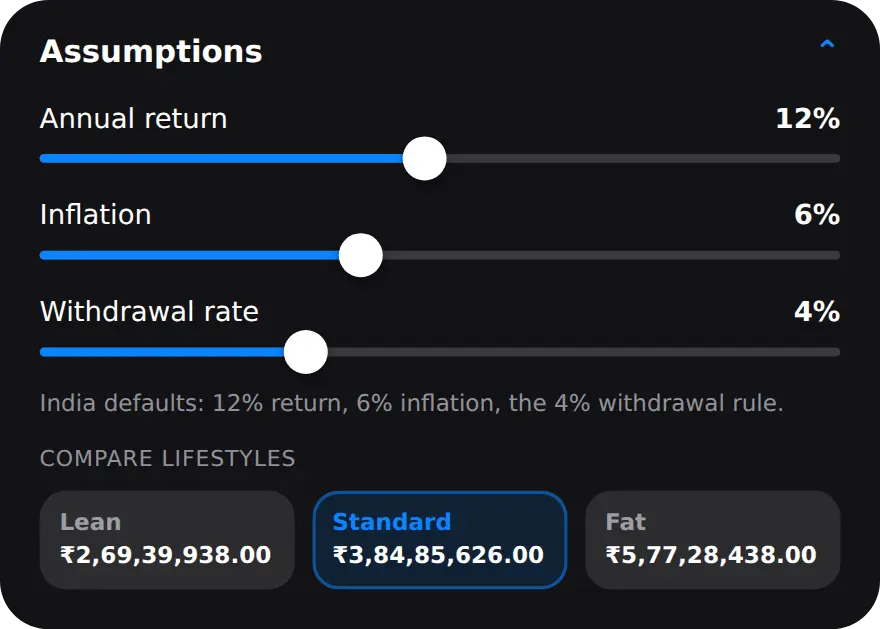

What is FIRE?
FIRE is the point where your investments can pay for your living costs year after year, so you no longer depend on a salary.
"Retire early" is the catchy half, but many people use FIRE to mean "work optional": the freedom to take a break, change careers or work fewer hours without money being the reason. Either way, it starts with two numbers you already know, or can find out: what you spend each month and what you have invested today.
How is a FIRE number calculated?
Divide your yearly expenses by the share of your investments you plan to withdraw each year. With the common 4% rule, that is 25 times your yearly expenses.
If you spend ₹40,000 a month, that is ₹4,80,000 a year. Divided by 4%, the FIRE number is ₹1,20,00,000 in today's money. The 4% rule comes from studies of past market returns, which found that withdrawing about 4% in the first year, then adjusting for inflation, lasted around 30 years. It is a rule of thumb, not a law. A lower withdrawal rate gives a bigger, more cautious number.
Why does inflation change the FIRE number so much?
Because the corpus has to cover your expenses in the year you stop working, not today's expenses.
At 6% inflation, ₹40,000 a month today becomes about ₹1,28,285 a month in 20 years. Sized for that, the FIRE number at 50 for someone who is 30 today is ₹3,84,85,626, more than three times the today's-money figure. The target also keeps moving: every extra year of work inflates it again. That is why a FIRE chart has two rising lines, your corpus and the target, and the answer is where they cross.
How do I estimate my FIRE number in MoneyOS?
Open Planning on Home and tap FIRE number. It starts from your own spending and net worth, so most of the work is already done. Five steps:
- Open the FIRE calculator. On Home, open Planning and tap FIRE number. The card shows your number once you have a few months of spending logged.
- Check the three amounts. Monthly spend starts as your 6-month average spend and Current corpus as your net worth from Manage. Fill in Monthly investment with what you invest each month.
- Set your ages. Set Age now and Target, the age you would like to reach financial independence by.
- Review the assumptions. Open Assumptions to see the annual return, inflation and withdrawal rate. Each has a slider, so you can try a more careful estimate.
- Read the result. The top line shows the age you reach your FIRE number at this rate and whether that beats your target. Tap Save as goal to track it under Goals.
Monthly spend leaves out SIPs and other investments, the same way MoneyOS keeps saving separate from spending. Current corpus can be negative if you owe more than you have invested, and the projection keeps it that way rather than pretending the debt is not there.
In the example on screen, someone aged 30 spends ₹40,000 a month, has ₹5,00,000 invested and puts in ₹25,000 a month. At the default assumptions they reach their FIRE number at about 55, roughly 25.3 years away, so the calculator says it misses a target age of 50. Raising the monthly investment to ₹30,000 brings that to about 53. If the corpus can never catch up with the target, the screen says "Not reachable at this rate" instead of inventing an age.
What do Lean, Standard and Fat FIRE mean?
They size the number for a different lifestyle: Lean uses 70% of today's spending, Standard uses all of it, and Fat uses 150%.

The cards sit under Compare lifestyles, each with its own FIRE number. In the example, Lean comes to ₹2,69,39,938 and is reached at about 50, while Fat comes to ₹5,77,28,438 and takes until about 62. Tap a card to make it the plan on screen. The gap between them is a useful reminder that spending less later can matter as much as investing more now.
What does the FIRE calculator not tell you?
It is an estimate built on steady assumptions. Real life is bumpier.
- Returns are not steady. The calculator assumes the same return every month. The defaults are 12% a year for returns, 6% for inflation and a 4% withdrawal rate. These are starting assumptions you can change, not predictions.
- Taxes are not included. Neither are one-off costs such as a home, a wedding or children's education.
- It is not advice. Use it to compare scenarios. For decisions about what to invest in, speak to a SEBI-registered investment adviser.
The good news is that the two inputs you control most, what you spend and what you invest, are the ones MoneyOS already tracks. A spending limit that fits your salary moves the result as much as any assumption. Everything is worked out on your iPhone, with no account and nothing sent to a server. Read what stays on your phone.
Frequently asked questions
What does FIRE stand for?
FIRE stands for Financial Independence, Retire Early. It means building investments large enough that a planned yearly withdrawal covers your living costs, so working becomes a choice rather than a need.
What is the 4% rule?
It is a rule of thumb: if you withdraw about 4% of your investments in the first year and adjust for inflation after that, the money has historically lasted around 30 years. It means a FIRE number of about 25 times your yearly expenses. It is a guideline from past data, not a guarantee.
Why is my FIRE number so large?
Because it is sized for your expenses in the year you reach it, not today's. At 6% inflation, ₹40,000 a month today becomes about ₹1,28,000 a month in 20 years, and the number grows with it.
Does MoneyOS use my real spending?
Yes. Monthly spend starts as the average of your last six months of spending in MoneyOS, with SIPs and other investments left out. You can change it to try a different budget.
Is the FIRE estimate a guarantee?
No. It assumes the same return every month and one inflation rate for every year, and it does not include taxes. Real returns go up and down. Treat it as a way to compare scenarios, not as investment advice.
Is MoneyOS free?
Yes. The whole app is free, with no subscription, no ads and no in-app purchases. There is no account and no bank login, and the calculation runs on your iPhone.